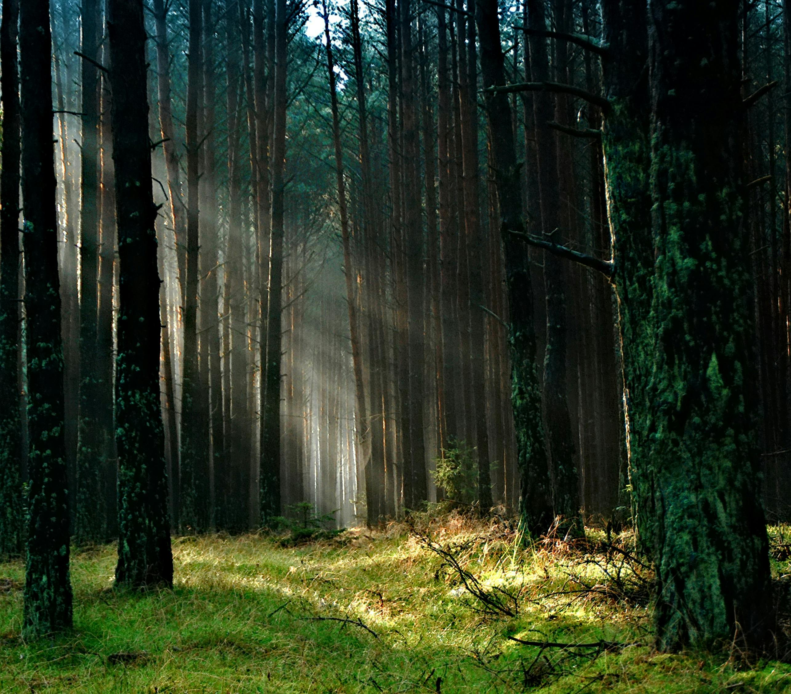
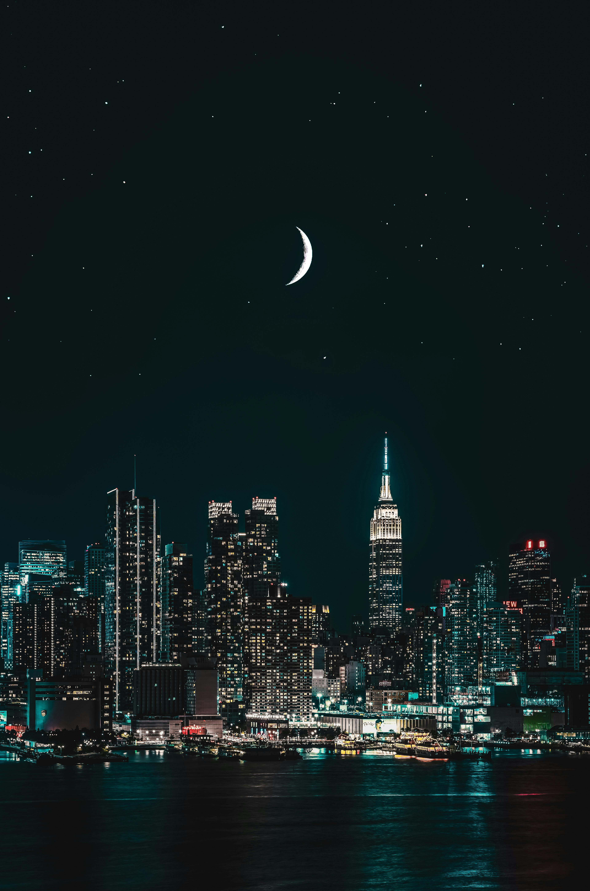
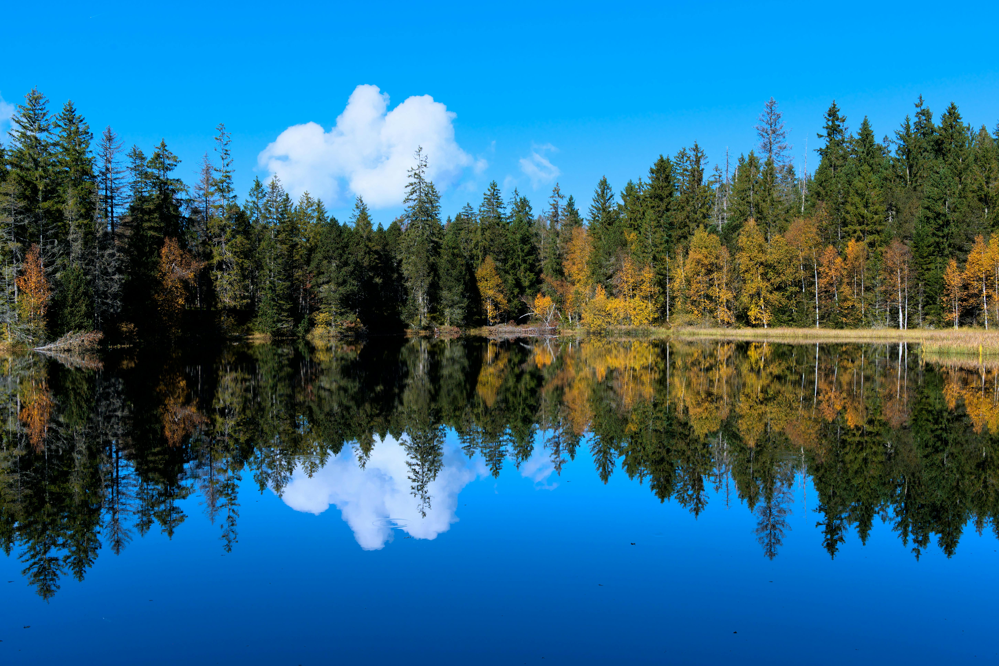
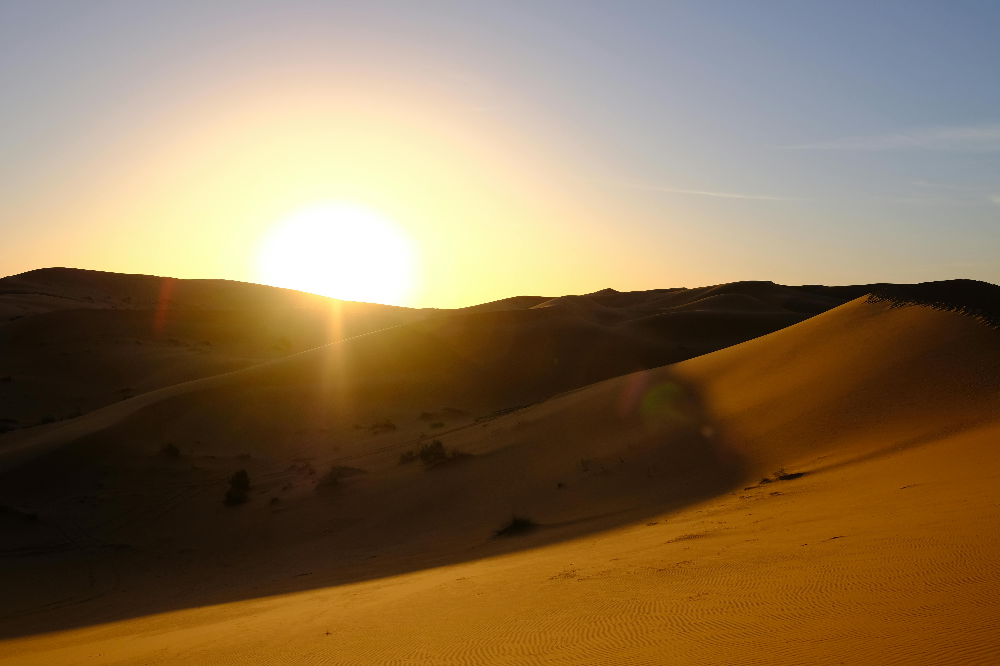

This website showcases a collection of nature and city landscapes. The layout automatically adapts to mobile, tablet, and large screens. It also responds to user accessibility preferences such as dark mode and reduced motion settings.





